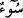
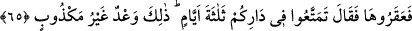

onun rızkını temin etmek sizin üzerinizde değildir. Ondan faydalanmak ise sizedir.
Nitekim rivâyete göre deve otlayıp suyunu içtikten sonra bacaklarını açar, dokuz yüz,
başka bir görüşe göre de bin beş yüz âile kapları dolana kadar sağarlardı, sütünü
içerler, hatta saklarlardı.
Sonra Salih (a.s.) inkârda ısrar ettiklerini görerek devenin âkıbetinden endişe edince
tedbirini alıp: “Ona bir kötülük dokundurmayın” buyurdu. Çünkü düşman, hasmının
delilinin ortaya çıkmasından hoşlanmaz. Hatta onu boşa çıkarmak ve gizlemek için
elinden gelen gayreti gösterir.
Bu ifâde ile deveye zarar verecek bir şeyle saldırmak mübâlağa ile yasaklanıyor.
Öyle ki daha saldırmanın ilk hareketi olan dokunma bile yasaklanıyor. Ayrıca “
/bir
kötülük” lafzı, vurma, kesme gibi tüm eziyet çeşitlerinin içine alsın diye nekre
kılınmıştır. Yâni deveyi kesmek ve öldürmek şöyle dursun ona eziyet verici herhangi bir
şeyle yaklaşmayın, dövmeyin, iteleyip kakalamayın bile. “Yoksa sizi” gelmesi “yakın
bir azap yakalar.”
65. “Fakat onu kesip devirdiler. (Salih) dedi ki: “Yurdunuzda üç gün daha
yaşayın. Bu, yalan olmayan bir uyarıdır.”
“Fakat” deve, yazın vâdînin dışında otlarken hayvanları ondan korkup vâdînin
içlerine kaçıyorlardı. Kışın ise deve vâdînin içlerinde bulunurken, bu sefer de
hayvanları ondan korkup vadinin dışına kaçıyordu. Bu durum kendilerine zorluk
çıkarınca “onu kesip devirdiler.” Bu işi, kavmin emir ve rızasıyla Salif oğlu Kudar
yaptı. Devenin etini taksim edip tüm kasaba halkına dağıttılar. Kıssanın tafsîlâtı A‘râf
sûresinde geçti.
Kaşifî der ki: “Sâlih (a.s.) o zaman kavminin arasında değildi. Geri dönünce devenin
başına gelenleri ona anlattılar.”
Salih (a.s.) kavmine “dedi ki: “Yurdunuzda” şehrinizde ve evlerinizde “üç gün
daha” yani Çarşamba, Perşembe ve Cuma günleri “yaşayın.” Çünkü deveyi Çarşamba
gecesi kestiler, Cumartesi sabahı da kendileri helak edildiler. et-Tibyan’da böyle
geçmektedir.
Beldelere “diyâr” denilir. Çünkü dönüp dolaşılır, yani çeşitli tasarruflarda bulunulur.
Onların beldelerine “Diyaru Bekr” adı verilir. Mekke etrafında yaşayan Araplar da:
“Biz dâr Araplarındanız.” derler. Bu sözleriyle o belde Araplarından olduklarını
kastederler. Nitekim Bahru’l-ulûm’da böyle geçmektedir.
Denilir ki Salih (a.s.) onlara: “Yarın yüzleriniz sararacak, öbür gün kıpkırmızı
kesilecek, üçüncü gün ise kapkara olacak. Ondan sonra da başınıza azap gelecek.” dedi.
Nitekim dediği gibi de oldu.